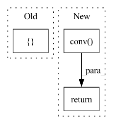

Pattern ID :30280

Before Change
self.conv = Conv(c1 * 4, c2, k, s, p, g, act)
def forward(self, x): // x(b,c,w,h) -> y(b,4c,w/2,h/2)
return self.conv(torch.cat([x[..., ::2, ::2], x[..., 1::2, ::2], x[..., ::2, 1::2], x[..., 1::2, 1::2]], 1))
class Concat(nn.Module):
After Change
def forward(self, x: Tensor) -> Tensor:
y = focus_transform(x)
out = self.conv(y)
return out
def focus_transform(x: Tensor) -> Tensor:
In pattern: SUPERPATTERN
Frequency: 3
Non-data size: 3
Instances
Fragment ID: 89737257
Project Name: zhiqwang/yolov5-rt-stack
Commit Name: 5633f4d6d59438739ee0ee40a91fc80328f22b12
Time: 2020-10-03
Author: zhiqwang@outlook.com
File Name: models/common.py
M Class Name: Focus
N Class Name: Focus
M Method Name: forward(2)
N Method Name: forward(2)
M Parent Class: nn.Module
N Parent Class: nn.Module
M File Name: models/common.py
N File Name: models/common.py
M Start Line: 90
M End Line: 91
N Start Line: 90
N End Line: 94
'>
Before Change
if self.seq == "desc":
out = torch.cat([x_4, x_3, x_2, x_1], dim=1)
else:
out = torch.cat([x_1, x_2, x_3, x_4], dim=1)
return out
After Change
else:
y = torch.cat(outs, -1)
y = self.conv(y)
return y
class DropBlock2(torch.nn.Module):
'>
Fragment ID: 89737253
Project Name: miemie2013/miemiedetection
Commit Name: aabe1f2d364493c30179de6cf7d5c2d0c6ee7258
Time: 2021-12-30
Author: 53960695+miemie2013@users.noreply.github.com
File Name: mmdet/models/custom_layers.py
M Class Name: SPP
N Class Name: SPP
M Method Name: forward(2)
N Method Name: forward(2)
M Parent Class: torch.nn.Module
N Parent Class: torch.nn.Module
M File Name: mmdet/models/custom_layers.py
N File Name: mmdet/models/custom_layers.py
M Start Line: 518
M End Line: 526
N Start Line: 644
N End Line: 653
'>
Before Change
y_range = T.arange(0, h, dtype=T.float32, device=input.device) / (h - 1) * 2.0 - 1
x_range = x_range[np.newaxis, np.newaxis, np.newaxis, :].repeat((b, 1, h, 1))
y_range = y_range[np.newaxis, np.newaxis, :, np.newaxis].repeat((b, 1, 1, w))
offset = T.cat([input, x_range, y_range], dim=1)
return offset
After Change
y = torch.cat([x, gx, gy], 1)
else:
y = torch.cat([x, gx, gy], -1)
y = self.conv(y)
return y
class SPP2(torch.nn.Module):
'>
Fragment ID: 89737254
Project Name: miemie2013/miemiedetection
Commit Name: aabe1f2d364493c30179de6cf7d5c2d0c6ee7258
Time: 2021-12-30
Author: 53960695+miemie2013@users.noreply.github.com
File Name: mmdet/models/custom_layers.py
M Class Name: CoordConv
N Class Name: CoordConv
M Method Name: forward(2)
N Method Name: forward(2)
M Parent Class: torch.nn.Module
N Parent Class: torch.nn.Module
M File Name: mmdet/models/custom_layers.py
N File Name: mmdet/models/custom_layers.py
M Start Line: 498
M End Line: 508
N Start Line: 574
N End Line: 580